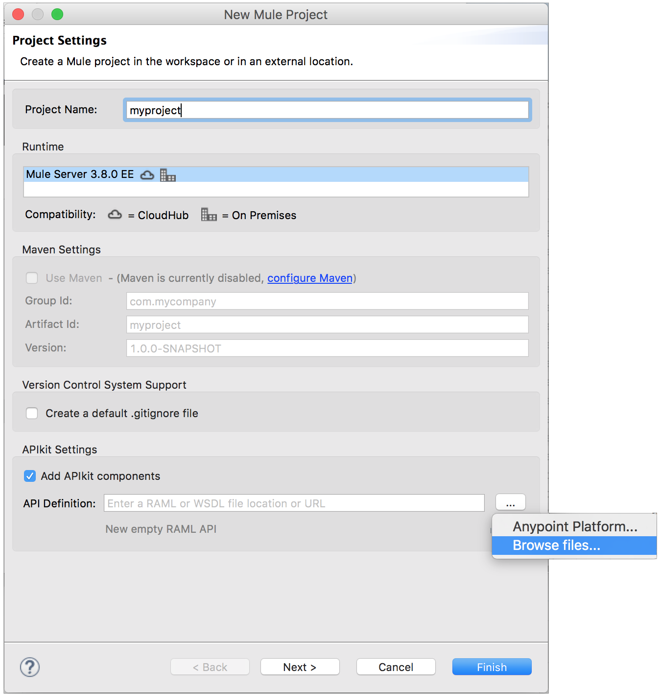
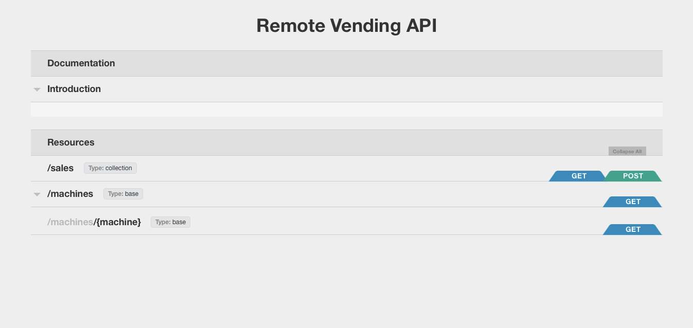
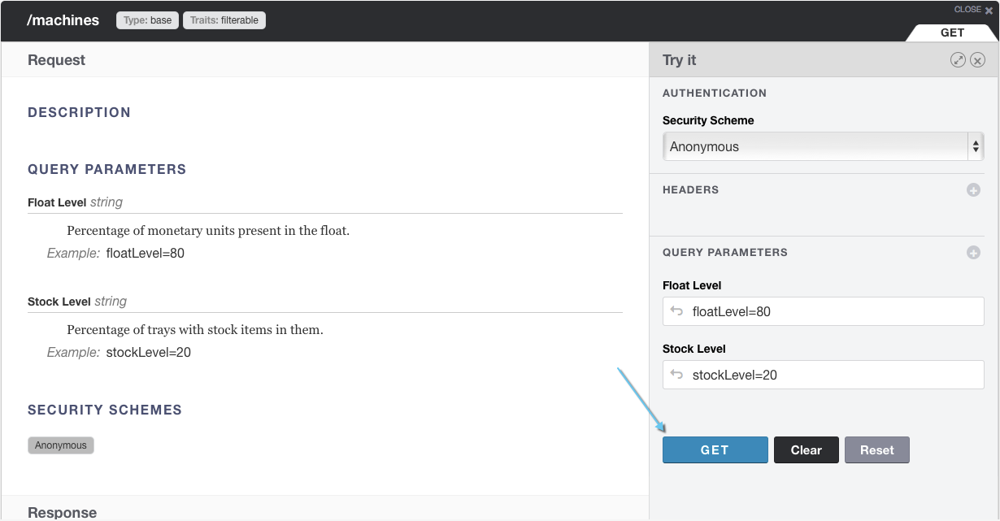
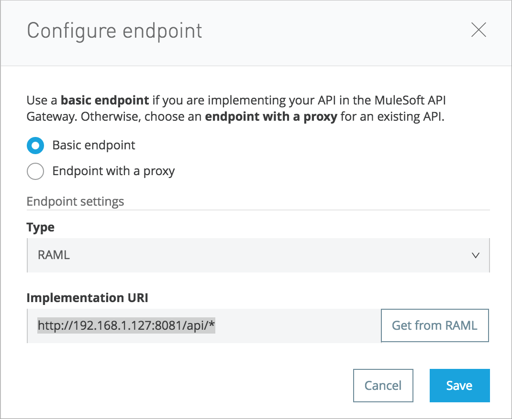

Simple REST API Tutorial
This tutorial shows you how to build and deploy an APIkit project that imports a RAML. You run the API in Anypoint Studio, use APIkit Console to simulate calls to the API, prepare the project for deployment, deploy the project to Anypoint Platform, and apply a policy to the API.
Prerequisites
Studio 6.0 or later is recommended for this tutorial. If you use Studio 5.x, install API Gateway Runtime 2.2.0 and expect minor differences, mainly in the UI.
Scenario
A vending machine provider, SnackVendor, that needs to track the contents of all the vending machines deployed in the state of California. To better manage resources, SnackVendor wants to send drivers to replenish the stock only of the vending machines that are running low on content. The API required to address this scenario covers two main tasks:
-
Updating vending machine data: to update the central database on each sale
-
Tracking inventory: to find out if a machine is low on stock
Creating a New Project
To create a new project:
-
Download the example api.raml file to your local drive.
-
Under the File menu, select New > Mule Project.
-
In the New Mule Project wizard, enter a Name, myproject for example, Mule Runtime 3.8.0.
-
Check Add APIkit components. In the RAML file field, browse to and select the downloaded
api.ramlfile. -
Click Finish.
Studio launches the new project and generates a Main flow with an HTTP Listener, an APIkit Router, and reference to the APIkit exception strategy mappings. Backend flows also appear. The RAML file you imported resides
src/main/api.
Running and Testing the Project
-
Right-click the project name in the Project Explorer, then select Run As > Mule Application.
The APIkit Console appears below the canvas, displaying the resource-action pairs exposed by the API.
 -
Click Introduction under DOCUMENTATION to view the API description.
The main Introduction title and sentence map to the contents of
documentationin the root section of the RAML file. -
Click
/machinesto expand the section. ExpandGET: /machines, then click the tab labeled Try It. -
Click the GET button to send a test call to GET a list of machines.
 -
The API returns a list of machines.
The output is the payload set on the message by the
get:/machines:apiConfigflow.{ "count": 3, "machines": [ { "id": "ZX4102", "location": "Starbuck's, 442 Geary Street, San Francisco, CA 94102" }, { "id": "ZX5322", "location": "Starbuck's, 462 Powell Street, San Francisco, CA 94102" }, { "id": "ZX6792", "location": "Cafe La Taza, 470 Post Street, San Francisco, CA 94102" } ] }
Adding Logic to the Project
For example purposes, add over-simplified logic to the project to use later in API Manager. Unlike the APIkit-generated flows, the flow you create during this procedure returns a result, a payload message, when you call the API from a browser.
-
Drag an HTTP component to the canvas.
Studio creates a flow named apiFlow by default.
-
In the apiflow, select the HTTP connector to open its properties editor.
-
Click
 to edit the Connector Configuration global configuration element.
to edit the Connector Configuration global configuration element. -
Change the value of the Base Path as follows:
remote-vending -
Click OK.
-
In the properties editor, change the Path setting from
/to/test-policy. -
Drag a Set Payload component to the process area of apiFlow.
-
Set the Value of the payload to
test policy. -
Save the changes.
Deploying the Project to Anypoint Platform
In Studio, you prepare the API for auto-discovery. You need to set multiple auto-discovery global elements, one for each flow to which you want to direct requests. In the auto-discovery global configuration, you select a drop-down containing the names of a flow in the project.
Finally, you run the project as a Mule application. Studio deploys the flows as individual APIs to Anypoint Platform, and registers the APIs with API Manager. After registering the APIs, you can apply policies and perform other API management tasks.
To deploy an APIkit project to Anypoint Platform:
-
In Studio, select Anypoint Studio > Preferences > Anypoint Studio > Anypoint Platform for APIs, and enter your client ID and client secret as described on the auto-discovery page.
-
In the Global Elements dialog, configure auto-discovery by entering settings for a global element as follows:
-
API Name: vending
-
API Version: 1.0development
-
Flow Name: api-main
-
-
Enter auto-discovery settings for a second global element as follows:
-
API Name: test-policy
-
API Version: 1.0development
-
Flow Name: apiFlow
-
-
In Project Explorer, right-click the APIkit project name, and select Run As > Mule Application.
Studio connects to API Manager in API Platform. The Studio console indicates that the project is deployed:
INFO 2016-08-20 12:54:28,564 [main] com.mulesoft.module.client.autodiscovery.AutoDiscoveryDeploymentListener: Successfully created API named vending with version 1.0development INFO 2016-08-20 12:54:28,774 [main] com.mulesoft.module.client.autodiscovery. ... AutoDiscoveryDeploymentListener: Successfully registered source http://192.168.1.127:8081/remote-vending/test-policy to API test-policy with version 1.0development ...
-
Sign into Anypoint Platform, or if you are already signed in, refresh the browser.
-
Go to API Manager.
The vending and test-policy APIs appear in API Manager.
Using the implementation URI, you can now simulate calls to the API using API Console. For example:
You can also apply policies to the APIs.
Applying a Policy
You can apply the rate limiting policy to limit the number of requests to an API within a period of time.
-
Click
1.0developmentto go to the API version details for the vending API.The API version details page for the vending API appears.
-
On the Policies tab, scroll down to the rate limiting policy, and click Apply.
The Apply "Rate limiting" policy dialog appears.
-
Configure the policy. For example, configure rate limiting to 3 requests per minute.
-
Click Apply.
-
Click
1.0developmentto go to the API version details for the test-policy API. -
Apply the rate limiting policy to the test-policy API.
Testing the Policy
To test the policy:
-
Click the 1.0development version of the vending API.
The API version details page for the vending API appears.
-
In the Status section click Configure endpoint.
The Configure endpoint dialog shows that the auto-discovery process deployed the API to a basic endpoint. The implementation URI shows the URL of the endpoint, which contains your local IP address.
 -
In a browser, go to the IP address and port shown in the implementation URI. For example:
The following message appears because you added no logic other than APIkit simulation logic to the flow used by the vending API:
{ "message": "Resource not found" } -
Refresh the browser three times.
The rate limiting policy is enforced, as indicated by the output:
API calls exceeded -
In a browser, go to the implementation URI for the test-policy API. For example:
test policyappears. -
Refresh the browser three times.
The rate limiting policy is enforced, as indicated by the output:
API calls exceeded